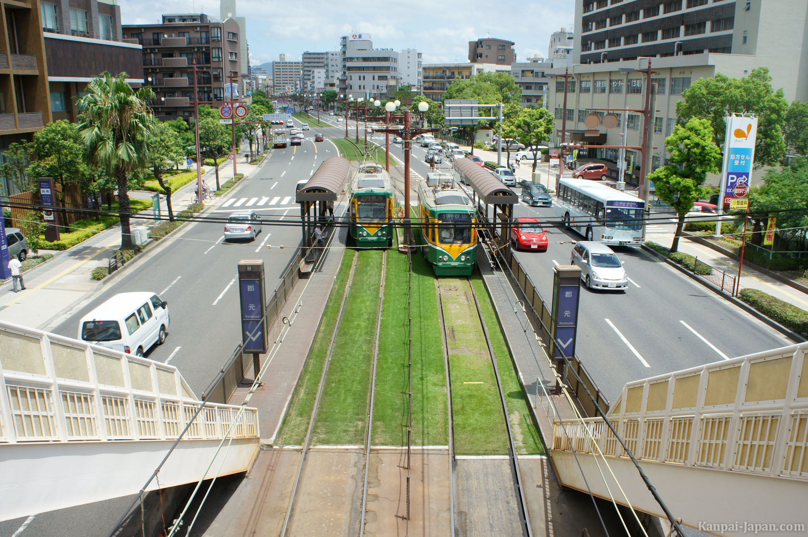
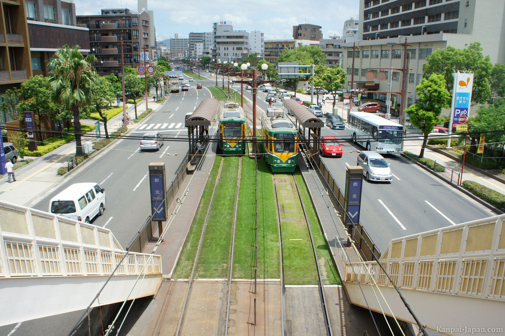

La ciudad de Kagoshima es la ciudad capital de la prefectura de Kagoshima, sobre la región de Kyushu en la isla de Kyushu, al suroeste de Japón. Se estimaba que el 1 de enero de 2005 la ciudad tenía 605 650 habitantes, lo que representa una densidad de población de 1107,81 personas por km².
Kagoshima |
Lunes | Martes | Miercoles | Jueves | Viernes | Sábado | Domingo |
|---|---|---|---|---|---|---|---|
| Shibuya | Sin reunión | Sin reunión | 10:30 | 15:00 | 08:00 | Sin reunión | Sin reunión |
| Ueno | Sin reunión | Sin reunión | Sin reunión | Sin reunión | Sin reunión | Sin reunión | 17:00 |
| Ikebokuro | Sin reunión | 10:30 | Sin reunión | Sin reunión | Sin reunión | Sin reunión | Sin reunión |
| Nakano | 10:30 | Sin reunión | Sin reunión | Sin reunión | Sin reunión | 20:30 | Sin reunión |